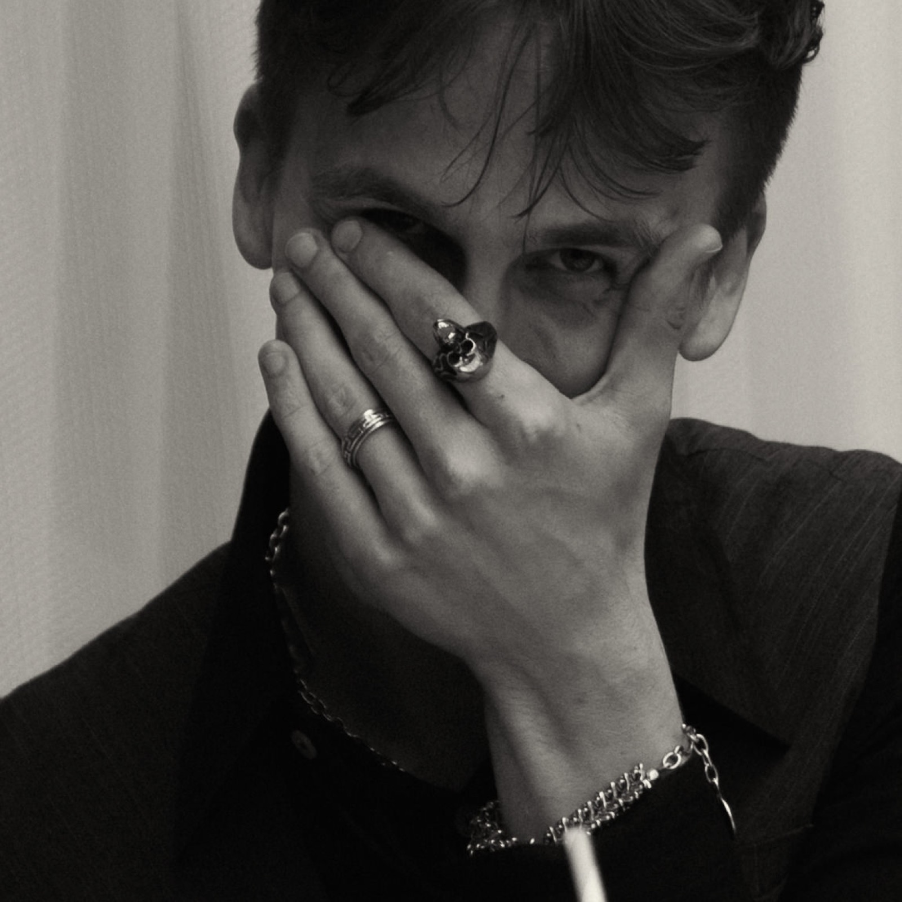
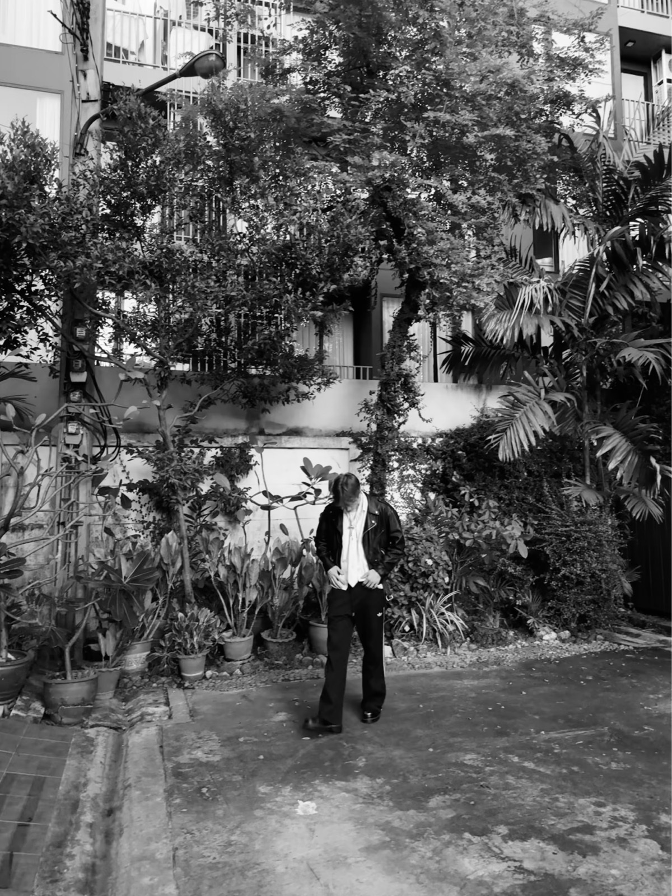
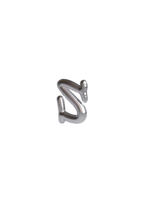
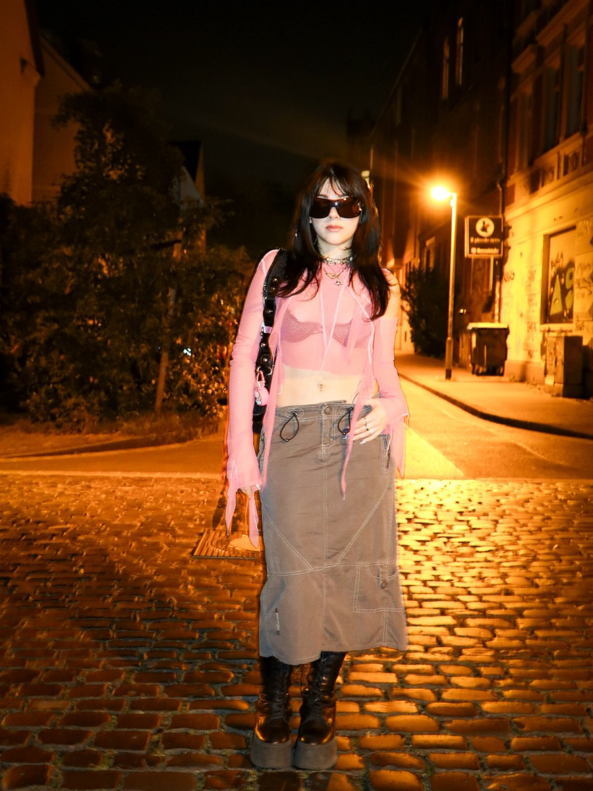
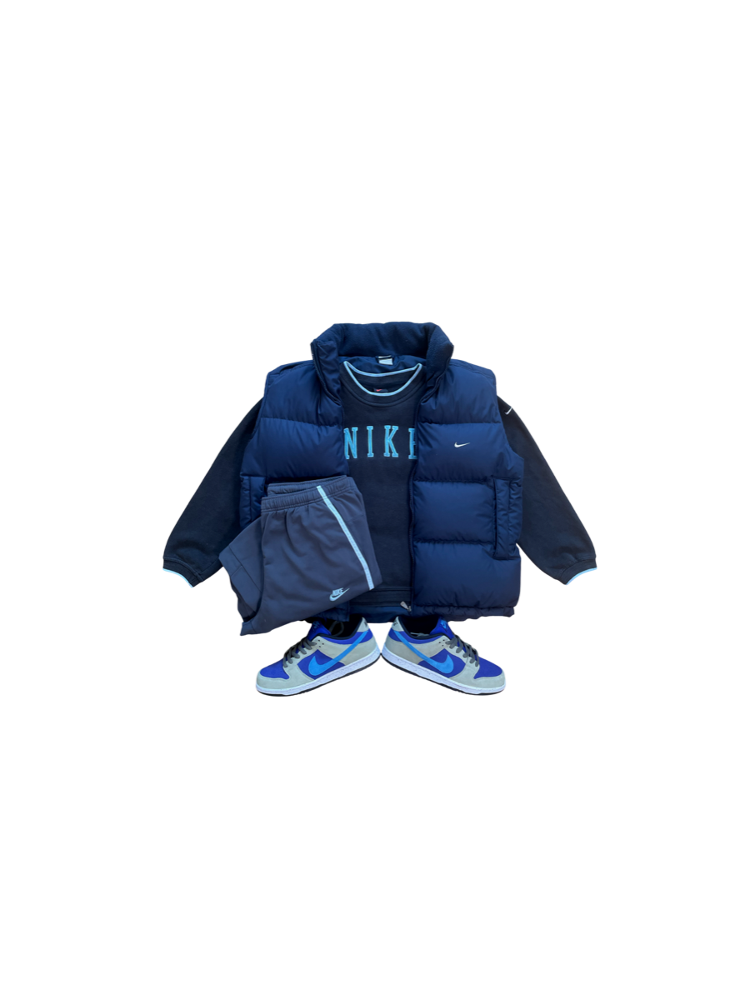
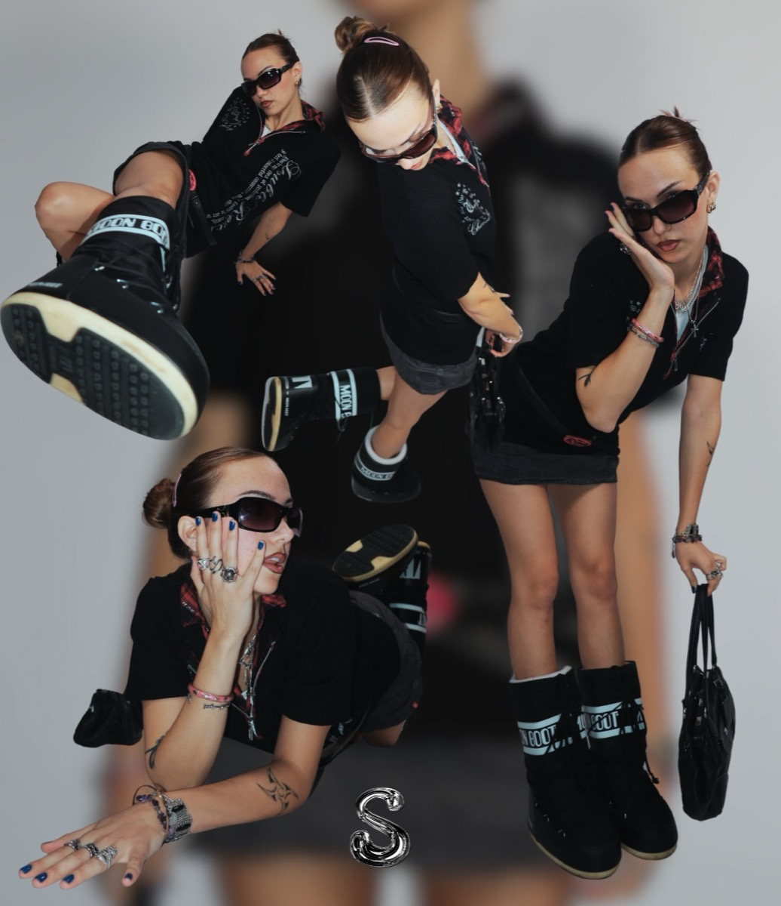
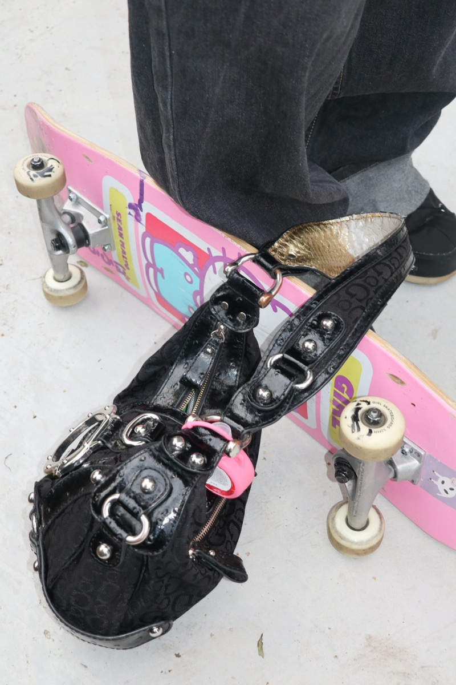

Wo akademisches Wissen auf unternehmerische Praxis trifft — Theorie, die in echten Marken, Kampagnen und einem eigenen Vintage-Label sichtbar wird.
In diesem Teil gebe ich einen Einblick, wer ich jenseits der Arbeit bin — was mich inspiriert, was mich antreibt, und wie meine persönlichen Interessen meine Perspektive formen.

„Mein Studium gab mir das Handwerkszeug, analytische Forschung mit echten Business-Fragen zu verbinden.“
Dieser Abschnitt zeigt, wie mein Studium der Wirtschaftspsychologie meine Denkweise geprägt hat — und mir das Handwerkszeug gab, analytische Forschung mit praktischen Business-Herausforderungen zu verbinden.
Hier zeige ich, wie akademisches Wissen und unternehmerische Praxis zusammenkommen — und wie das meinen Ansatz für Branding und Social Media prägt.

stoffhaendler.vintage — eigenes Label



Für Anfragen, Kooperationen oder ein Gespräch.
niko_mandic@web.de